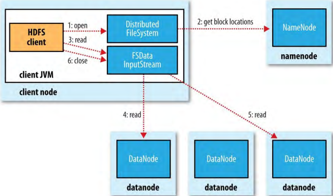
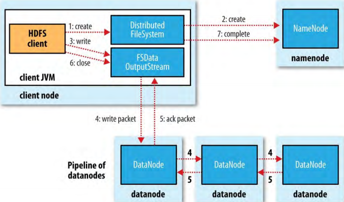

6、数据流（Data Flow）
6.1、文件读取剖析（Anatomy of a File Read）
图 3-2、客户端从HDFS读取数据（A client reading data from HDFS）

图3-2展示了读取一个文件的主要事件序列。
- 客户端使用FileSystem对象（对HDFS来说是一个DistributedFileSystem实例）的open()方法打开它希望读取的文件；
- DistributedFileSystem使用远程过程调用（RPC，remote procedure calls）调用namenode，来确定文件开头的一些bolcks的位置。对于每一个block，namenode返回拥有这个block备份的datanodes的地址。此外，这些datanodes是根据它们距离客户端的接近性排序的（根据集群网络的拓扑topology）。如果客户端本身是一个datanode（以MapReduce task 为例），如果本地datanode有block的一个备份客户端就会从本地datanode读取block。DistributedFileSystem返回一个FSDataInputStream（一个支持文件seek的输入流）到客户端用以读取数据。FSDataInputStream包括了一个DFSInputStream，管理着datanode和namenode的I/O。
- 客户端调用流的read()方法。DFSInputStream（存储着文件开头一些blocks的datanode地址）会连接文件的第一个block的最近的一个datanode，数据从datanode流向客户端。
- 客户端反复调用流的read()方法，直到读取完block。
- 寻找下一个block的最近的datanode，读取数据。这对客户端是透明的，对客户端来说就是读取一个连续的流。blocks是按顺序读取的，客户端随着DFSInputStream打开datanode新的连接从流读取数据。在这个过程中也会调用namenode以获取下一批需要读取的blocks的datanode位置。
- 客户端读取完成后，调用FSDataInputStream的close()方法。
在读取过程中，如果DFSInputStream在和datanode通信过程中遇到一个错误，它会尝试block下一个最近的datanode。它会记忆失败的datanodes，以避免在后面的读取过程中不必要的尝试。DataInputStream也会对从datanode传输给它的数据验证checksums。如果发现坏掉的block，DFSInputStream会从其它datanode读取block复本；并向namenode报告坏掉的block。
这种设计的重要方面是客户端直接地联系datanodes获取数据和由namenode引导名每个block的最佳datanode获取数据。这种设计能够让HDFS扩展到大量的同时进行的客户端，因为数据交通是横跨集群的所有datanodes的。与此同时，namenode仅仅服务于block位置请求（存储在内存中，非常高效率）。
6.1.1、在网络拓扑和Hadoop（NETWORK TOPOLOGY AND HADOOP）
大量数据处理中，节点间传输数据的速率的限定因子是——带宽（是稀有资源），因此使用两个节点间的带宽作为距离的衡量标准。但是在实践中衡量节点间的带宽是困难的，Hadoop使用了一个简单的方法，将网路看作一个树（tree）两个节点间的距离是它们距离它们共同祖先节点（ancestor）的距离之和。树的层级（levels）不是预定义的，但是获取一个进程所运行的数据中心（data center）、机架、节点对应的层级是简单的。其思想是，以下场景的可用带宽依次递减：
- 同节点
- 同机架不同节点
- 同数据中心的不同机架的节点
- 不同数据中心的节点
假设节点n1在机架r1在数据中心d1。用/d1/r1/n1代表。使用这种方式，以上四种场景的距离表示为：
- distance(/d1/r1/n1,/d1/r1/n1)=0
- distance(/d1/r1/n1,/d1/r1/n2)=2
- distance(/d1/r1/n1,/d1/r2/n3)=4
- distance(/d1/r1/n1,/d2/r3/n4)=6
最后，重要的是要意识到Hadoop需要从配置（在第十章网络拓扑介绍）才能知道网络的拓扑结构。默认情况下，Hadoop假设网络是单一层次结构，换句话说就是所有的节点都在同一数据中心的同一机架。对于小的集群，可能事实情况就是这样，不需要更多的配置。
6.2、写文件剖析（Anatomy of a File Write）
理解数据流是有指导意义的，它澄清了HDFS的一致性模型（coherency model）。
图 3-4、客户端向HDFS写数据（A client writting data to HDFS）

- 客户端调用DistributedFileSystem的create()方法来创建文件。
- DistributedFileSystem向namenode发送RPC调用来在文件系统的namespace创建一个新的文件，但是没有和它关联的block。那么namenode会进行不同的check以保证创建之前文件不存在并且客户端有创建文件的权限。如果check通过，namenode产生一条新文件的记录，否则，文件创建失败并且客户端抛出IOException。与读取类似，FSDataOutputStream包括一个DFSOutputStream，处理和datanodes、namenode的通信。
- 客户端往DFSOutputStream写数据，DFSOutputStream把数据分为小包（packets），并把它们写入叫做data queue的内部队列。data queue由DataStreamer消费，DataStreamer通过选取一个合适的datanodes集合向namenode发送请求分配新blocks以存储复本。
- DataStreamer选取的datanodes组成了一个pipeline，如果假设复本级别是3，那么pipeline中就有3个节点。DataStreamer将小包流向pipeline中的第一个datanode，datanode保存小包并把它送到pipeline中的第二个datanode。类似地，第二个datanode保存packet并把它发送到pipeline中第三个datanode。
- DFSOutputStream也维护着一个等待着被datanodes告知收悉的packets小包的内部队列叫做ack queue。当某个packet只有被pipeline中的datanode被告知收悉了，才会被从ack queue移除。如果数据在往某个datanode写的时候，datanode发生了错误，会发生以下对客户端透明的动作。首先，pipeline关闭，ack queue中的所有小包都会被加到data queue的前面，以保证错误datanode下游的datanodes不会错过任何packets。好的datanodes的当前block被分配新的identity，它和namenode通信，以便namenode在错误的datanode恢复之后删除错误datanode上的部分block。block数据的余数被写到pipeline中的好的datanode。namenode发现block的复本数目不对时，它会安排在另一个datanode上补足复本。后来的blocks会被作为正常block看待。写某个block时，不大可能有多个datanodes错误。只要dfs.namenode.replication.min（默认1）个block复本写入成功，写操作就成功，block会通过集群异步备份到标的的复本数量。
- 当客户端往流FSDataOutputStream写完数据的时候，调用流FSDataOutputStream的close()方法。这个操作会把所有剩余的小包（packets）flush到datanode pipeline，并在通知namenode完成操作前等待告知收悉。
- 通知namenode完成写操作。namenode已经知道了文件由哪些blocks组成（因为DataStreamer请求了block分配），所以在返回成功之前只用等待blocks复本数目达到复本因子数目。
6.2.1、复本放置（Replica Placement）
namenode是怎样选择在哪个datanode放置复本的呢？这有一个在可靠性、写带宽、读带宽之间的权衡（trade-off）。例如，把所有的复本放在一个node上会导致最小的写入带宽消耗（因为复本pipeline在一个node上运行），但是这不是真的冗余安全（如果这个node坏掉，这个block的数据就会丢失）。另外，对于不同机架的读取带宽会很大。对于另一个极端，把复本放置在不同的数据中心会使冗余安全最大化，但是带宽消耗会很大。即使是在同一个数据中心（所有的hadoop集群都在同一个数据中心运行），也有很多不同的复本放置类型。
Hadoop的默认放置类型是把第一个复本放置在客户端同一个节点上（对于在集群外运行的客户端，随意选取一个节点，尽管系统尽量不选择太慢或太繁忙的节点）。第二个复本放置在于第一个复本不同的机架上，随机选择。第三个复本放置在和第二个复本相同的机架，但是随机选择的不同节点上。更多的复本放在集群中随机选择的节点上，尽管系统尽量避免在同一机架放置太多复本。
一旦选择完复本位置，就构建一个pipeline，同时会考虑到网络拓扑。
综合起来，这种复本放置方式在可靠性（blocks放在两个机架）、写带宽（写的时候只用穿越一次网络交换机）、读表现（从两个机架读取的选择）和block跨集群分布（客户端只在本机架写了一个block）之间达到了好的平衡。
6.3、一致性模型（Coherency Model）
文件系统的一致性模型描述了一个文件读写的数据可见性。HDFS为了性能牺牲了一些POSIX需要，所以某些操作可能和以前的认知不同。
创建一个文件之后，他在文件系统namespace中是可见的：
Path p = new Path("p");
fs.create(p);
assertThat(fs.exists(p), is(true));
但是，写到这个文件的数据不保证是可见的，即使是对流进行了flush。所以，文件的长度是0:
Path p = new Path("p");
OutputStream out = fs.create(p);
out.write("content".getBytes("UTF-8"));
out.flush();
assertThat(fs.getFileStatus(p).getLen(), is(0L));
一旦超过一个的block的数据写完，第一个block将会对新的读者可见。对后续的block也是如此，正在写的block对其它读者总是不可见的。
HDFS通过FSDataOutputStream的hflush()方法提供了一个强制所有缓存刷到datanode的方式。在成功执行hflush()方法后，HDFS保证文件中在那个点写完的数据达到了写pipeline中的所有datanodes，并且对所有新读者是可见的：
Path p = new Path("p");
OutputStream out = fs.create(p);
out.write("content".getBytes("UTF-8"));
out.hflush();
assertThat(fs.getFileStatus(p).getLen(), is(((long)"content".length())));
注意，hfulsh()方法不保证datanodes已经把数据写到磁盘，只能保证数据在datanodes的内存中（所以，假如在数据中心断电的情况下，数据会丢失）。为了更强的保证，可用hsync()方法。
关闭HDFS文件会隐含调用hflush()方法：
Path p = new Path("p");
OutputStream out = fs.create(p);
out.write("content".getBytes("UTF-8"));
out.close();
assertThat(fs.getFileStatus(p).getLen(), is(((long)"content".length())));
6.3.1、应用设计的后果（Consequences for application design）
一致性模型会影响到设计应用的方式。如果不调用hflush()或者hsync()，应该有在客户端或者系统错误情况下丢失多至一个block的数据的准备。对于许多应用，这是不可接受的，所以应该在适当的点调用hflush()。尽管hflush()操作被设计为不增加HDFS的负担，但是它是有开销的（hsync()开销更多），所以在数据可靠性和吞吐量上要有权衡。可接受的权衡应该是在测试过不同hflush()频率下应用表现后应用依赖的、适当的数据可以查得到。